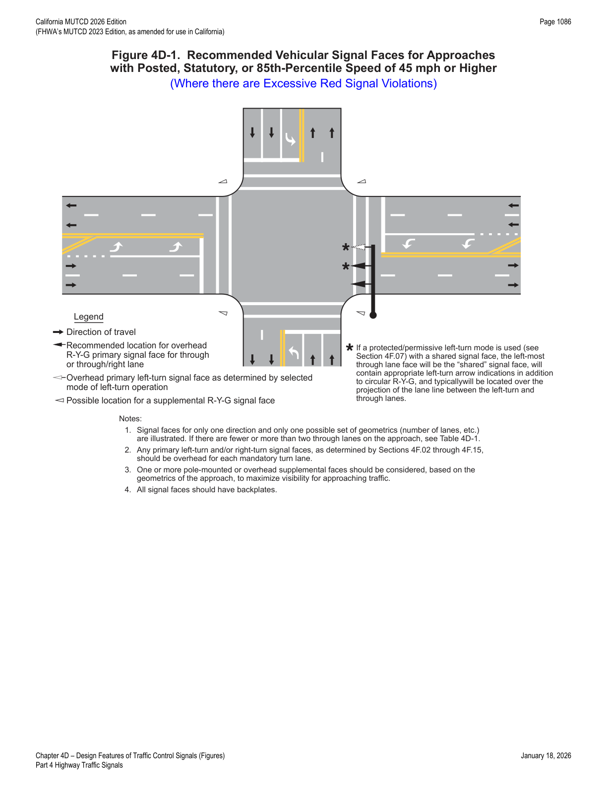
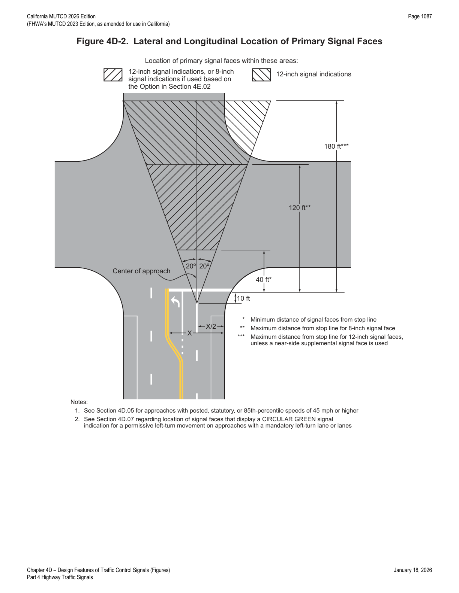
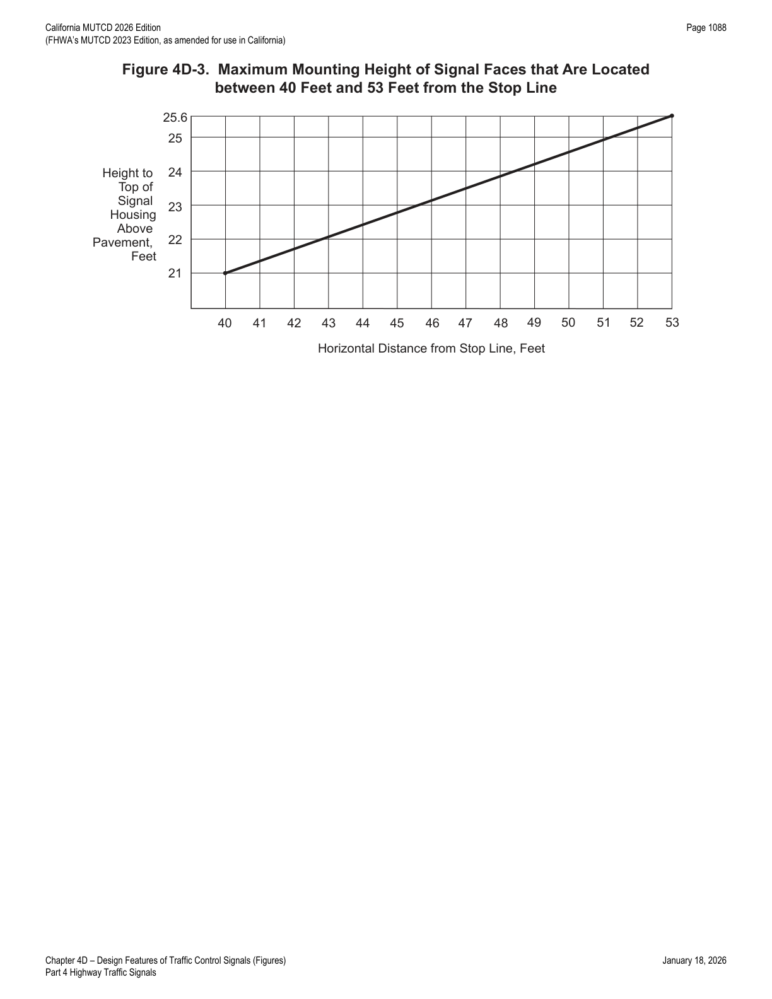

Part 4 · Highway Traffic Signals · Chapter 4D
Design Features of Traffic Control Signals
Covers the physical and operational design of traffic control signals: provisions for pedestrians, bicyclists, and transit; the number, visibility, lateral and longitudinal positioning, and mounting height of signal faces; temporary/portable signals; and California-specific left-turn phasing and signal-timing review provisions.
4D.01General
- 01The features of traffic control signals of interest to road users are the location, design, and meaning of the signal indications. Uniformity in the design features that affect the traffic to be controlled, as set forth in this Manual, is especially important for the safety and efficiency of operations.
- 02Traffic control signals can be operated in pretimed, semi-actuated, or full-actuated modes. For isolated (non-interconnected) signalized locations on rural high-speed highways, full-actuated mode with advance vehicle detection on the high-speed approaches is typically used. These features are designed to reduce the frequency with which the onset of the yellow change interval is displayed when high-speed approaching vehicles are in the "dilemma zone" such that the drivers of these high-speed vehicles find it difficult to decide whether to stop or proceed.
- 03The design and operation of traffic control signals shall take into consideration the needs of all modes of traffic including access and safety.
- 04When a traffic control signal is not in operation, such as before it is placed in service, during seasonal shutdowns, or when it is not desirable to operate the traffic control signal, the signal faces shall be covered, turned, or taken down to clearly indicate that the traffic control signal is not in operation.
- 05If a cover is placed over a traffic control signal face that is not in operation and that has a yellow retroreflective strip along the perimeter of its signal backplate (see Paragraph 21 in Section 4D.06), the entire signal face, including the backplate, should be covered. If a traffic control signal face that is not in operation and that has a yellow retroreflective strip along the perimeter of its signal backplate is turned, the turned signal face should be oriented such that the yellow backplate border will not reflect light back to road users on any of the approaches to the intersection.
- 06Seasonal shutdown is a condition in which a permanent traffic control signal is turned off or otherwise made non-operational during a particular season when its operation is not justified. This might be applied in a community where tourist traffic during most of the year justifies the permanent signalization, but a seasonal shutdown of the signal during an annual period of lower tourist traffic would reduce delays; or where a major traffic generator, such as a large factory, justifies the permanent signalization, but the large factory is shut down for an annual factory vacation for a few weeks in the summer.
- 07A traffic control signal shall control traffic only at the intersection or midblock location where the signal faces are placed.
- 08Midblock crosswalks should not be signalized if they are located within 300 feet from the nearest traffic control signal, unless supported by an engineering study or engineering judgment that indicates safe and efficient operation of the closely-spaced traffic control signals can be achieved.
- 09Midblock crosswalks should not be signalized if they are located within 100 feet from side streets or driveways that are controlled by STOP signs or YIELD signs, unless supported by an engineering study or engineering judgment that considers restricting turning movements from the side street or driveway to eliminate conflicts with pedestrian and bicyclist movements.
- 10Engineering judgment should be used to determine the proper phasing and timing for a traffic control signal. Since traffic flows and patterns change, phasing and timing should be reevaluated regularly and updated if needed.
- 11Traffic control signals within ½ mile of one another along a major route or in a network of intersecting major routes should be coordinated, preferably with interconnected controller units. Where traffic control signals that are within ½ mile of one another along a major route have a jurisdictional boundary or a boundary between different signal systems between them, coordination across the boundary should be considered.
- 12Signal coordination need not be maintained between control sections that operate on different cycle lengths.
- 13Sections 4F.19, 4Q.03, and 8D.09 contain information about coordination of traffic control signals with grade crossing signals and movable bridge signals.
4D.02Provisions for Pedestrians
- 01Chapter 4I contains additional information regarding pedestrian control features, Chapter 4J contains additional information regarding pedestrian hybrid beacons, and Chapter 4K contains additional information regarding accessible pedestrian signals and detectors.
- 02
Pedestrian signal heads shall be used in conjunction with vehicular traffic control signals under any of the following conditions, unless the pedestrian crossing is prohibited:
- A. If the basis for traffic signal installation was justified by an engineering study and meeting either Warrant 4, Pedestrian Volume or Warrant 5, School Crossing (see Chapter 4C);
- B. If an exclusive pedestrian signal phase or a leading pedestrian interval (LPI) is provided with all conflicting vehicular movements being stopped;
- C. At an established signalized school crossing; or
- D. Where there are existing pedestrian accommodations and engineering judgment determines that multi-phase signal indications (such as split-phase timing) would tend to confuse or cause conflicts with pedestrians using a crosswalk guided only by vehicular signal indications.
- 03Pedestrian signal heads should be installed for each marked crosswalk at a location controlled by a traffic control signal.
- 04Where pedestrian movements regularly occur, pedestrians should be provided with sufficient time to cross the roadway by adjusting the traffic control signal operation and timing to provide sufficient crossing time every cycle or by providing pedestrian detectors.
- 05Where certain pedestrian movements are prohibited at a traffic control signal location, a No Pedestrian Crossing (R9-3) sign (see Section 2B.57) should be used if it is impracticable to provide a barrier or other physical feature to physically discourage the pedestrian movements.
- 06Accessible pedestrian signals (see Chapter 4K) that provide information in non-visual formats (such as audible tones and/or speech messages, and vibrating surfaces) enhance safety and accessibility at signalized crossings for pedestrians with vision disabilities.
- 07Pedestrian signal heads may be used under other conditions based on engineering judgment.
4D.03Provisions for Bicyclists
- 01At installations where visibility-limited signal faces are used, signal faces shall be adjusted so bicyclists for whom the indications are intended can see the signal indications. If the visibility-limited signal faces cannot be aimed to serve the bicyclist, then separate signal faces (see Chapter 4H) shall be provided for the bicyclist.
- 02On bikeways, signal timing and actuation shall be reviewed and adjusted to consider the needs of bicyclists.
- 03Where it is desired to provide separate signal indications to control bicyclist movements at a traffic control signal, bicycle signal faces may be used (see Chapter 4H).
- 04Sections 9B.02, 9B.11, 9B.20, 9B.22, 9E.02, 9E.06, 9E.07, 9E.08, 9E.11, 9E.12, and 9E.15 contain additional provisions regarding bicyclist movements and actuation at traffic control signals.
- 05The Guide for the Development of Bicycle Facilities (2024), published by AASHTO, and the Urban Bikeway Design Guide (2025), published by NACTO, provide guidance on the recommended practices regarding additional provisions of traffic signals for bicyclists.
4D.04Provisions for Transit Vehicles
- 01Where it is desired to provide separate signal indications to control transit vehicles at a traffic control signal, LRT signal indications may be used at intersections where special signal phases are used for transit vehicles (see Section 8D.15).
4D.05Number of Signal Faces on an Approach
- 01
The signal faces for each approach to an intersection or a midblock location shall be provided as follows:
- A. If a signalized motor vehicle through movement exists on an approach, a minimum of two primary signal faces shall be provided for the through movement. Except for single-lane approaches, if a signalized motor vehicle through movement does not exist on an approach, a minimum of two primary signal faces shall be provided for the signalized motor vehicle turning movement that is considered to be the major movement from the approach (also see Section 4F.16). Single-lane approaches shall have two signal faces per movement.
- B. See Sections 4F.02 through 4F.08 for left-turn (and U-turn to the left) signal faces.
- C. See Sections 4F.09 through 4F.15 for right-turn (and U-turn to the right) signal faces.
- 02Where a movement (or a certain lane or lanes) at the intersection never conflicts with any other signalized vehicular or pedestrian movement, a continuously-displayed single-section GREEN ARROW signal indication may be used to inform road users that the movement is free-flow and does not need to stop.
- 03In some circumstances where the through movement never conflicts with any other signalized vehicular or pedestrian movement at the intersection, such as at T-intersections with appropriate geometrics and/or pavement markings and signing, an engineering study might determine that the through movement (or certain lanes of the through movement) can be free-flow and not signalized.
- 04If two or more left-turn lanes are provided for a separately-controlled left-turn movement, or if a left-turn movement represents the major movement from an approach, two or more primary left-turn signal faces should be provided.
- 05If two or more right-turn lanes are provided for a separately-controlled right-turn movement, or if a right-turn movement represents the major movement from an approach, two or more primary right-turn signal faces should be provided.
- 06Locating primary signal faces overhead on the far side of the intersection has been shown to provide safer operation by reducing intersection entries late in the yellow interval and by reducing red signal violations, as compared to post-mounting signal faces at the roadside or locating signal faces overhead within the intersection on a diagonally-oriented mast arm or span wire. On approaches with two or more lanes for the through movement, one signal face per through lane, centered over each through lane, has also been shown to be effective in reducing excessive red signal violations.
- 07
If the posted or statutory speed limit or the 85th-percentile speed on an approach to a signalized location is 45 mph or higher, signal faces should be provided as follows for all new or reconstructed signal installations where there is a documented pattern of excessive red signal violations (see Figure 4D-1):
- A. The minimum number and location of primary (non-supplemental) signal faces for through traffic should be provided in accordance with Table 4D-1.
- B. If the number of overhead primary signal faces for through traffic is equal to the number of through lanes on an approach, one overhead signal face should be located approximately over the center of each through lane.
- C. Except for shared left-turn and right-turn signal faces, any primary signal face required by Sections 4F.02 through 4F.16 for a mandatory turn lane should be located overhead approximately over the center of each mandatory turn lane.
- D. All primary signal faces should be located on the far side of the intersection.
- E. In addition to the primary signal faces, one or more supplemental pole-mounted or overhead signal faces should be considered to provide added visibility for approaching traffic that is traveling behind large vehicles.
- F. All signal faces should have backplates.
- 08This layout of signal faces should also be considered for any major urban or suburban arterial street with four or more lanes and for other approaches with speeds of less than 45 mph.

| Number of Through Lanes on Approach | Total Number of Primary Through Signal Faces* | Minimum Number Overhead-Mounted |
|---|---|---|
| 1 | 2 | 1 |
| 2 | 2 | 1 |
| 3 | 3 | 2** |
| 4 or more | 4 or more | 3** |
* A minimum of two through signal faces is always required (see Section 4D.05); these recommended numbers may be exceeded — also see the cone-of-vision requirements in Section 4D.07. ** If practical, all of the recommended number of primary through signal faces should be located overhead.
4D.06Visibility, Aiming, and Shielding of Signal Faces
- 01The visibility of signal indications to approaching traffic should be the highest priority for signal face placement and aiming.
- 02Road users approaching a signalized intersection or other signalized area, such as a midblock crosswalk, should be given a clear and unmistakable indication of whether they are being directed to stop or permitted to proceed.
- 03The geometry of each intersection to be signalized, including vertical grades, horizontal curves, and obstructions as well as the lateral and vertical angles of sight toward a signal face, as determined by typical driver-eye position, should be considered in determining the vertical, longitudinal, and lateral position of the signal face.
- 04At signalized midblock crosswalks, at least one of the signal faces should be over the traveled way for each approach.
- 05The two primary signal faces required as a minimum for each approach should be continuously visible to traffic approaching the traffic control signal, from a point at least the minimum sight distance provided in Table 4D-2 in advance of and measured to the stop line. This range of continuous visibility should be provided unless precluded by a physical obstruction or unless another signalized location is within this range.
- 06If approaching traffic does not have a continuous view of at least two signal faces for at least the minimum sight distance shown in Table 4D-2, a sign (see Section 2C.35) should be installed to warn approaching traffic of the traffic control signal.
- 07If a sign is installed to warn approaching road users of the traffic control signal, the sign may be supplemented by a Warning Beacon (see Section 4S.03).
- 08A Warning Beacon used in this manner may be interconnected with the traffic signal controller assembly in such a manner as to flash yellow during the period when road users passing this beacon at the legal speed for the roadway might encounter a red signal indication (or a queue resulting from the display of the red signal indication) upon arrival at the signalized location.
- 09If the sight distance to the signal faces for an approach is limited by horizontal or vertical alignment, supplemental signal faces aimed at a point on the approach at which the signal indications first become visible may be used.
- 10Supplemental signal faces should be used if engineering judgment has shown that they are needed to achieve intersection visibility both in advance and immediately before the signalized location.
- 11If supplemental signal faces are used, they should be located to provide optimum visibility for the movement to be controlled.
- 12In cases where irregular street design necessitates placing signal faces for different street approaches with a comparatively small angle between their respective signal indications, each signal indication should, to the extent practical, be visibility-limited by signal visors, signal louvers, or other means so that an approaching road user's view of the signal indication(s) controlling movements on other approaches is minimized.
- 13Signal visors exceeding 12 inches in length shall not be used on free-swinging signal faces.
- 14Signal visors should be used on signal faces to aid in directing the signal indication specifically to approaching traffic, as well as to reduce "sun phantom," which can result when external light enters the lens.
- 15The use of signal visors, or the use of signal faces or devices that direct the light without a reduction in intensity, should be considered as an alternative to signal louvers because of the reduction in light output caused by signal louvers.
- 16Special signal faces, such as visibility-limited signal faces, may be used such that the road user does not see signal indications intended for other approaches before seeing the signal indications for their own approach, especially if simultaneous viewing of both signal indications could cause the road user to be misdirected.
- 17If the posted or statutory speed limit or the 85th-percentile speed on an approach to a signalized location is 45 mph or higher, signal backplates should be used on all of the signal faces that face the approach. Signal backplates should also be considered for use on signal faces on approaches with posted or statutory speed limits or 85th-percentile speeds of less than 45 mph where sun glare, bright sky, and/or complex or confusing backgrounds indicate a need for enhanced signal face target value.
- 18The use of backplates enhances the contrast between the traffic signal indications and their surroundings for both day and night conditions, which is also helpful to older drivers.
- 19If backplates are used, ancillary legends of any kind that identify the purpose or operation of the signal face shall not be placed on the backplate.
- 20The inside of signal visors (hoods), the entire surface of louvers and fins, and the front surface of backplates shall have a dull black finish to minimize light reflection and to increase contrast between the signal indication and its background.
- 21A yellow retroreflective strip with a minimum width of 1 inch and a maximum width of 3 inches may be placed along the perimeter of the face of a signal backplate to project a rectangular appearance at night.
| 85th-Percentile Speed | Minimum Sight Distance |
|---|---|
| 20 mph | 175 feet |
| 25 mph | 215 feet |
| 30 mph | 270 feet |
| 35 mph | 325 feet |
| 40 mph | 390 feet |
| 45 mph | 460 feet |
| 50 mph | 540 feet |
| 55 mph | 625 feet |
| 60 mph | 715 feet |
Distances in Table 4D-2 are derived from stopping sight distance plus an assumed queue length for shorter cycle lengths (60 to 75 seconds).
4D.07Lateral Positioning of Signal Faces
- 01At least one and preferably both of the minimum of two primary signal faces required for the through movement (or the major turning movement if there is no through movement) on the approach shall be located between two lines intersecting with the center of the approach at a point 10 feet behind the stop line, one making an angle of approximately 20 degrees to the right of the center of the approach extended, and the other making an angle of approximately 20 degrees to the left of the center of the approach extended. The signal face that satisfies this requirement shall simultaneously satisfy the longitudinal placement requirement described in Section 4D.08 (see Figure 4D-2).
- 02If both of the minimum of two primary signal faces required for the through movement (or the major turning movement if there is no through movement) on the approach are post-mounted, they shall both be on the far side of the intersection, one on the right and one on the left of the approach lane(s).
- 03The required signal faces for through traffic on an approach shall be located not less than 8 feet apart measured horizontally perpendicular to the approach between the centers of the signal faces.
- 04If more than one separate turn signal face is provided for a turning movement and if one or both of the separate turn signal faces are located over the roadway, the signal faces shall be located not less than 8 feet apart measured horizontally perpendicular to the approach between the centers of the signal faces.
- 05If horizontally-arranged or clustered signal faces are used, the minimum 8-foot horizontal separation between the two signal faces should be measured from the center of the right-most signal indication in the signal face on the left to the center of the left-most signal indication in the signal face on the right.
- 06Except as provided in Paragraph 7 of this Section, for signal faces located over the roadway, separate turn signal faces should be located at least 8 feet from the nearest traffic signal face for a different movement on the same approach measured horizontally perpendicular to the approach between the centers of the signal faces.
- 07For modifications to existing traffic signals, the minimum horizontal separation between a separate turn signal face and the nearest traffic signal face for a different movement may be reduced to 3 feet.
- 08If a signal face controls a specific lane or lanes of an approach, its position should make it readily visible to road users making that movement.
- 09Section 4D.05 contains additional provisions regarding lateral positioning of signal faces for approaches having a posted or statutory speed limit or an 85th-percentile speed of 45 mph or higher.
- 10If a mandatory left-turn, right-turn, or U-turn lane is present on an approach and if a primary separate turn signal face controlling that lane is mounted over the roadway, the primary separate turn signal face should not be positioned any farther to the right than the extension of the right-hand edge of the mandatory turn lane or any farther to the left than the extension of the left-hand edge of the mandatory turn lane.
- 11Supplemental turn signal faces mounted over the roadway are not subject to the positioning recommendations in Paragraph 10 of this Section.
- 12For new or reconstructed signal installations, on an approach with a mandatory turn lane(s) for a permissive left-turn (or U-turn to the left) movement, signal faces that display a CIRCULAR GREEN signal indication should not be post-mounted on the far-side median or mounted overhead above the mandatory turn lane(s) or the extension of the lane(s).
- 13
If supplemental post-mounted signal faces are used, the following limitations shall apply:
- A. Left-turn arrows and U-turn arrows to the left shall not be used in near right signal faces that are located to the right of the through and/or right-turn lanes.
- B. Right-turn arrows and U-turn arrows to the right shall not be used in far left signal faces that are located to the left of the through and/or left-turn lanes. A far-side median-mounted signal face shall be considered a far left signal face for this application.
4D.08Longitudinal Positioning of Signal Faces
- 01
Except where the width of an intersecting roadway or other conditions make it physically impractical, the signal faces for each approach to an intersection or a midblock location shall be provided as follows:
- A. A signal face installed to satisfy the requirements for primary left-turn signal faces (see Sections 4F.02 through 4F.08) and primary right-turn signal faces (see Sections 4F.09 through 4F.15), and at least one and preferably both of the minimum of two primary signal faces required for the through movement (or the major turning movement if there is no through movement) on the approach shall be located: (1) no less than 40 feet beyond the stop line, and (2) no more than 180 feet beyond the stop line unless a supplemental near-side signal face is provided.
- B. The primary signal faces that are used to satisfy the requirements of Item A shall simultaneously satisfy the lateral placement requirement described in Section 4D.07 (see Figure 4D-2).
- 02Where the nearest signal face is located between 150 and 180 feet beyond the stop line, engineering judgment of the conditions, including the worst-case visibility conditions, should be used to determine if the provision of a supplemental near-side signal face would be beneficial.
- 03Supplemental near-side signal faces should be located as near as practicable to the stop line.
- 04Section 4D.05 contains additional provisions regarding longitudinal positioning of signal faces for approaches having a posted or 85th-percentile speed of 45 mph or higher.

4D.09Mounting Height of Signal Faces
- 01The bottom of the signal housing and any related attachments to a vehicular signal face located over any portion of a highway that can be used by motor vehicles shall be at least 15 feet above the pavement.
- 01aThe bottom of the signal housing and any related attachments to a vehicular signal face located over a roadway should be at least 17 feet. Refer to Caltrans' Standard Plans publication (see Section 1A.05 for information regarding this publication).
- 02
The bottom of the signal housing (including brackets) of a vehicular signal face that is vertically arranged or horizontally arranged and not located over a roadway:
- A. Shall be a minimum of 8 feet above the sidewalk or, if there is no sidewalk, above the pavement grade at the center of the roadway.
- B. Shall be a minimum of 4.5 feet above the median island grade of a center median island if located on the near side of the intersection.
- 03The top of the signal housing of a vehicular signal face located over any portion of a highway that can be used by motor vehicles should not be more than 25.6 feet above the pavement.
- 04For viewing distances between 40 and 53 feet from the stop line, the maximum mounting height to the top of the signal housing of a vehicular signal face located over any portion of a highway that can be used by motor vehicles should be as shown in Figure 4D-3.
- 05
The bottom of the signal housing (including brackets) of a vehicular signal face that is vertically arranged and not located over a roadway or shoulder (refer to Figures 4E-2, 4F-3, 4F-4, 4F-6, 4F-10, 4F-11, 4F-13, and 4F-15):
- A. Should be a maximum of 19 feet above the sidewalk or, if there is no sidewalk, above the pavement grade at the center of the roadway.
- B. Should be a maximum of 19 feet above the median island grade of a center median island if located on the near side of the intersection.
- 06
The bottom of the signal housing (including brackets) of a vehicular signal face that is horizontally arranged and not located over a roadway or shoulder (refer to Figures 4E-2, 4F-3, 4F-4, 4F-6, 4F-10, 4F-11, 4F-13, and 4F-15):
- A. Should be a maximum of 22 feet above the sidewalk or, if there is no sidewalk, above the pavement grade at the center of the roadway.
- B. Should be a maximum of 22 feet above the median island grade of a center median island if located on the near side of the intersection.

4D.10Lateral Offset (Clearance) of Signal Faces
- 01Signal faces mounted at the side of a roadway at less than 15 feet from the bottom of the housing and any related attachments should have a horizontal offset of not less than 2 feet from the face of a vertical curb, or if there is no curb, not less than 2 feet from the edge of a shoulder.
4D.11Temporary and Portable Traffic Control Signals
- 01A temporary traffic control signal is generally installed using methods that minimize the costs of installation, relocation, and/or removal. Typical temporary traffic control signals are for specific purposes, such as for one-lane, two-way facilities in temporary traffic control zones (see Chapter 4O), for a haul-road intersection, or for access to a site that will have a permanent access point developed at another location in the near future. Portable traffic signals are temporary traffic signals.
- 02Because a portable traffic control signal is considered to be a type of temporary traffic control signal, the provisions for temporary traffic control signals are also applicable to portable traffic control signals.
- 02aRefer to Section 6P.01 and Typical Application 14 Haul Road Crossing (Figure 6P-14(CA) and related Notes) when using a temporary traffic control signal at haul road crossings.
- 03Advance signing shall be used when employing a temporary traffic control signal.
- 04
A temporary traffic control signal shall:
- A. Meet the physical display and operational requirements of a conventional traffic control signal;
- B. Be removed when no longer needed; and
- C. Except as provided in Paragraph 5 of this Section, be placed in the flashing mode during periods when it is not desirable to operate the signal in the steady mode, or the signal heads shall be covered, turned, or taken down to indicate that the signal is not in operation.
- 05If the temporary traffic control signal is capable of being operated in a semi-actuated mode, such that green signal indications are continually shown to major-street traffic except when responding to a minor-street approach vehicle call, it may be operated in a semi-actuated mode instead of being placed in a flashing mode.
- 06A temporary traffic control signal should be used only if engineering judgment indicates that installing the signal will improve the overall safety and/or operation of the location.
- 07The use of temporary traffic control signals by a work crew on a regular basis in their work area should be subject to the approval of the jurisdiction having authority over the roadway.
- 08A temporary traffic control signal should not operate longer than 30 days unless associated with a longer-term temporary traffic control zone project.
- 09Section 6L.01 contains information about the use of temporary traffic control signals in temporary traffic control zones.
- 10Refer to FHWA's List of Known Errors for error in labeling Paragraph 9. Refer to Section 1A.04 for more details.
- 11One-way traffic control signals may utilize semi- or fully-traffic-actuated controller units, or may be manually controlled.
4D.101(CA)Permissive Left-Turn Phasing
- 01When a protected-permissive or permissive-protected left-turn phasing operation is used for a signal system, no information sign is necessary.
- 02If a sign is used, it shall be a LEFT TURN YIELD ON GREEN (Green Ball symbol) (R10-12) sign.
- 03Public agencies having jurisdiction may use an Activated Blank-Out message sign on local roads in place of the R10-12 sign on their local roads that are not part of an intersection with a State highway.
- 04The Activated Blank-Out sign shall say LEFT TURN YIELD in at least 6-inch high letters. The light source shall be designed and constructed so that when illuminated, the message shall be white and remain dark when not in use. The message shall be illuminated only when the green permissive ball is lighted.
- 05
The following apply to permissive left-turn phasing:
- This operation shall not be initiated where the left-turn collision warrant is satisfied.
- Both directions of through traffic shall be terminated simultaneously except where opposing left turns or opposing U-turns are prohibited.
- 05.3Signal faces should not be placed in a median facing a left-turn lane, unless: the signal face is provided with some type of visibility control so that the indications are not visible to traffic in the left-turn storage lane; or a LEFT TURN YIELD ON GREEN (symbolic circular green) (R10-12) sign is installed below the said signal face.
- 05.4Signs are not required for this operation unless U-turns are to be prohibited.
4D.102(CA)Review of Traffic Signal Operations
- 01All traffic signals should be periodically reviewed for proper operation. The traffic signal operation should be observed during morning and evening peak traffic periods and during off-peak periods. If an operating deficiency is observed, the reason for the deficiency should be determined. If there is a malfunction, the Maintenance unit should be notified, and after corrective work is done, further surveillance should be conducted to be sure no deficiency remains. If a need for a design change is observed, an analysis should be made to determine what improvement might be necessary to improve the design.
- 02
Improvements to consider are:
- Timing of: (a) Maximums or Force Offs, (b) Gap Interval, (c) Offsets, (d) Cycle Length
- Time-of-Day or Traffic Responsive Settings
- Signal Phasing or Phase Sequence
- Type of Operation
- Coordination of Signals
- Signs, Striping and/or Pavement Markings
- Roadway Improvements
- 03Timing and phasing of traffic signals and any subsequent changes in timing shall be approved by the public agency having jurisdiction. Timing records shall be kept by the agency responsible for the maintenance and/or operation and be readily available to the maintenance and traffic operations staffs and other agencies, where appropriate.
- 04Aids for timing are shown in Tables 4D-102(CA) and 4D-103(CA).
| 85th-Percentile Speed (mph) | Minimum Yellow Interval (sec) |
|---|---|
| 25 or less | 3.0 |
| 30 | 3.2 |
| 35 | 3.6 |
| 40 | 3.9 |
| 45 | 4.3 |
| 50 | 4.7 |
| 55 | 5.0 |
| 60 | 5.4 |
| 65 | 5.8 |
| Posted / Prima Facie Speed (mph) | Minimum Yellow Interval (sec) |
|---|---|
| 15 | 3.0 |
| 20 | 3.2 |
| 25 | 3.6 |
| 30 | 3.7 |
| 35 | 4.1 |
| 40 | 4.4 |
| 45 | 4.8 |
| 50 | 5.2 |
| 55 | 5.5 |
| 60 or higher | 5.9 |
The minimum yellow change interval is derived as T = V/(2d) + tR, where T = the minimum yellow change interval (sec), V = approach speed (ft/sec), d = deceleration rate (10 ft/sec²), and tR = perception-reaction time (1 sec); the detector setback distance D for advance detection equals the deceleration distance plus the reaction distance, D = V²/(2d) + VtR. Table 4D-101(CA)b's posted-speed values already build in the 7 mph added for speeds of 30 mph or higher, and 10 mph added for speeds of 25 mph or lower, used when computing the minimum yellow interval from a posted (rather than 85th-percentile) speed — see Section 4F.17 Standard, Paragraph 13c.
| Cars in Queue | Min. Time Req. (sec) | Stopped Queue (ft) | Moving Queue (ft, 30 mph) | Moving Queue Time (sec) | 50s | 60s | 70s | 90s | 120s | 180s | 240s |
|---|---|---|---|---|---|---|---|---|---|---|---|
| 1 | 4 | 25 | 0 | 2 | 70 | 60 | 50 | 40 | 30 | 20 | 15 |
| 5 | 13 | 125 | 352 | 10 | 360 | 360 | 255 | 200 | 150 | 100 | 175 |
| 10 | 23 | 250 | 792 | 20 | 720 | 660 | 510 | 400 | 300 | 200 | 150 |
| 15 | 33 | 375 | 1232 | 30 | 1080 | 960 | 765 | 600 | 450 | 300 | 225 |
| 20 | 43 | 500 | 1672 | 40 | 1260 | 1020 | 900 | 720 | 600 | 400 | 300 |
| 25 | 53 | 625 | 2112 | 50 | 1275 | 1125 | 1000 | 900 | 750 | 500 | 375 |
| 29 | 61 | 725 | 2464 | 58 | — | 1305 | 1160 | 1020 | 870 | 580 | 435 |
Table 4D-102(CA) in the source PDF tabulates every queue size from 1 to 29 vehicles (with the minimum green time required, stopped and moving queue lengths at 30 mph, and moving queue time) against ten signal cycle lengths (50, 60, 70, 80, 90, 100, 120, 150, 180, and 240 seconds); the excerpt above shows representative rows. Use it as a first-cut field aid for estimating queue storage length and per-lane hourly capacity at a candidate cycle length — verify against the full chart in the source PDF or a current capacity analysis tool before final design.
| mph | ft/s | 10s | 15s | 20s | 25s | 30s | 35s | 40s | 45s | 50s | 55s | 60s |
|---|---|---|---|---|---|---|---|---|---|---|---|---|
| 5 | 7.30 | 73.0 | 110.0 | 147.0 | 183.0 | 220.0 | 257.0 | 293.0 | 330.0 | 367.0 | 403.0 | 440.0 |
| 10 | 14.60 | 146.0 | 220.0 | 293.0 | 366.0 | 440.0 | 513.0 | 587.0 | 660.0 | 733.0 | 807.0 | 880.0 |
| 15 | 22.00 | 220.0 | 330.0 | 440.0 | 550.0 | 660.0 | 770.0 | 880.0 | 990.0 | 1,100.0 | 1,210.0 | 1,320.0 |
| 20 | 29.30 | 293.0 | 440.0 | 587.0 | 733.0 | 880.0 | 1,027.0 | 1,173.0 | 1,320.0 | 1,467.0 | 1,613.0 | 1,760.0 |
| 25 | 36.70 | 367.0 | 550.0 | 733.0 | 917.0 | 1,100.0 | 1,283.0 | 1,467.0 | 1,650.0 | 1,833.0 | 2,017.0 | 2,200.0 |
| 30 | 44.00 | 440.0 | 660.0 | 880.0 | 1,100.0 | 1,320.0 | 1,540.0 | 1,760.0 | 1,980.0 | 2,200.0 | 2,420.0 | 2,640.0 |
| 35 | 51.30 | 513.0 | 770.0 | 1,027.0 | 1,283.0 | 1,540.0 | 1,797.0 | 2,053.0 | 2,310.0 | 2,567.0 | 2,823.0 | 3,080.0 |
| 40 | 58.70 | 587.0 | 880.0 | 1,173.0 | 1,467.0 | 1,760.0 | 2,053.0 | 2,347.0 | 2,640.0 | 2,933.0 | 3,227.0 | 3,520.0 |
| 45 | 66.00 | 660.0 | 990.0 | 1,320.0 | 1,650.0 | 1,980.0 | 2,310.0 | 2,640.0 | 2,970.0 | 3,300.0 | 3,630.0 | 3,960.0 |
| 50 | 73.30 | 733.0 | 1,100.0 | 1,467.0 | 1,833.0 | 2,200.0 | 2,567.0 | 2,933.0 | 3,300.0 | 3,667.0 | 4,033.0 | 4,400.0 |
| 55 | 80.70 | 807.0 | 1,210.0 | 1,613.0 | 2,017.0 | 2,420.0 | 2,823.0 | 3,227.0 | 3,630.0 | 4,033.0 | 4,437.0 | 4,840.0 |
| 60 | 88.00 | 880.0 | 1,320.0 | 1,760.0 | 2,200.0 | 2,640.0 | 3,080.0 | 3,520.0 | 3,960.0 | 4,400.0 | 4,840.0 | 5,280.0 |
| 65 | 95.30 | 953.0 | 1,430.0 | 1,907.0 | 2,383.0 | 2,860.0 | 3,337.0 | 3,813.0 | 4,290.0 | 4,767.0 | 5,243.0 | 5,720.0 |
| 70 | 102.70 | 1,027.0 | 1,540.0 | 2,053.0 | 2,567.0 | 3,080.0 | 3,593.0 | 4,107.0 | 4,620.0 | 5,133.0 | 5,647.0 | 6,160.0 |
Table 4D-103(CA) provides speed-to-distance conversions (distance = speed in ft/s × elapsed time) from 1 to 120 mph in the source PDF; the rows above (5–70 mph, the common signal-design range) are reproduced in full. It is used to convert an approach speed and a desired advance-warning or clearance time directly into a placement distance without recalculating the ft/s conversion by hand.
★ Key Takeaways — Chapter 4D
- Every approach needs a minimum of two primary signal faces for its major movement (through, or the major turn if there is no through movement); faces must sit within a ±20° cone from a point 10 ft behind the stop line, be at least 8 ft apart (3 ft for retrofits), and land between 40 ft and 180 ft beyond the stop line (120 ft max for 8-inch lenses) unless a supplemental near-side face is added.
- Mounting height: minimum 15 ft (Standard) / 17 ft (Guidance, per Caltrans Standard Plans) above the pavement for over-roadway faces, maximum 25.6 ft, with Figure 4D-3 governing the sliding scale for 40–53 ft viewing distances; side-mounted faces need minimum 8 ft (sidewalk) or 4.5 ft (near-side median) clearance, capped around 19–22 ft depending on arrangement.
- On 45-mph-or-higher approaches with documented excessive red-light violations, Figure 4D-1 and Table 4D-1 govern: more overhead primary faces, all faces on the far side, and backplates on every face.
- California's Table 4D-2 sets minimum continuous sight distance to signal faces (175 ft at 20 mph up to 715 ft at 60 mph); Table 4D-101(CA) sets minimum yellow change interval (3.0 sec at low speed up to 5.9 sec at 60+ mph), derived from the perception-reaction/deceleration formula T = V/(2d) + t_R.
- CA-specific Section 4D.101(CA) requires that permissive left-turn phasing never be used where the left-turn collision warrant is satisfied, and that a used sign be the LEFT TURN YIELD ON GREEN (R10-12) or an equivalent Activated Blank-Out sign; Section 4D.102(CA) requires periodic peak/off-peak review of every signal's operation, with agency-approved, recorded timing changes, aided by the queue-capacity chart (Table 4D-102(CA)) and speed/distance chart (Table 4D-103(CA)).